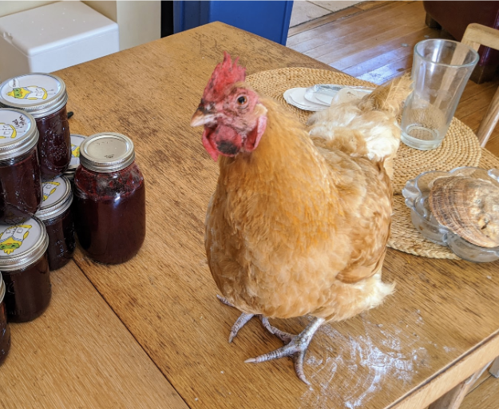
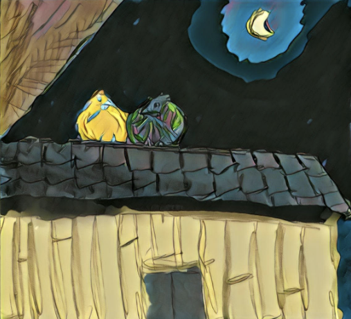
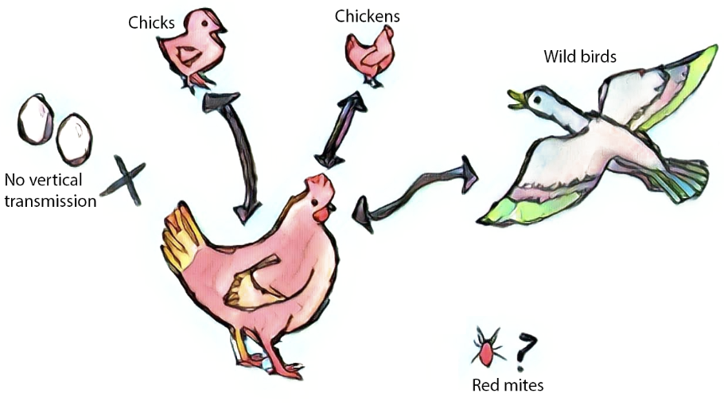
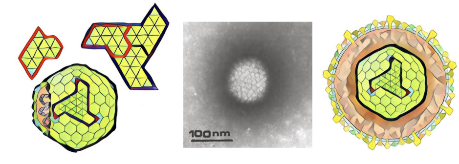
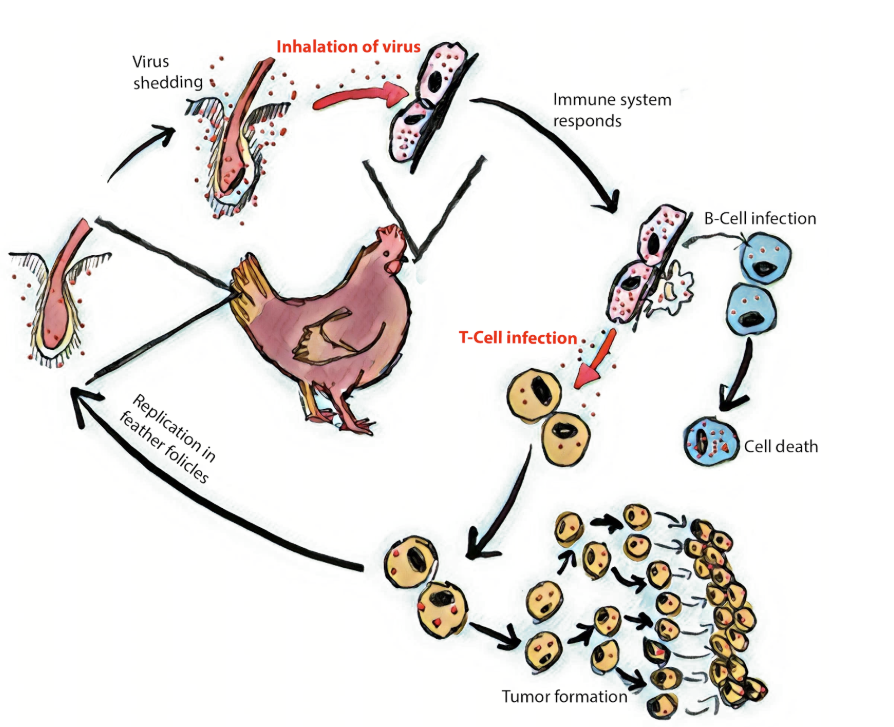

Marek’s Disease
in order that the world may have a little more knowledge, that it may build on what it knows instead of on what it thinks. - Apsley Cherry-Garrard
Osee flaps her wings and wobbles across my deck. Her golden-hue is a bright spot in a winter landscape. I scoop her up, and her yellow beak inspects my hands with rolling coos. She’s in search of treats but finds none. It’s been a brutal day at lab, but holding her is calming. I rustle her feathers to check for mites, I check her comb for evidence of bullying, I tickle her feet and she kicks her legs in response. I hope her legs are weak because of her age, but part of me worries it is a symptom of Marek’s Disease. Osee is waiting to be put down and still checking my hands for treats. She is hopeful, she is brave, she is patient. When things are not going well, I try to emulate her.

Fig 1. Osee, also known as O.C., for Original Chicken. Osee is a buff orpington chicken who enjoys eating plum jam and is usually not allowed inside.
I got chickens because I thought they would serve as a healthy diversion from my research. Friends and mentors encouraged me to cultivate a hobby, and when I heard ‘hobby’, I thought ‘chickens’. Research is a journey with few milestones. My contributions to society often seem trivial. I am here to turn what we believe into what we know, but my work instead is an uncertain accumulation of fragmented knowledge. Osee’s work is straighter, provide eggs and joy on a not-quite daily basis.
It works as a hobby. The impact of my contributions to their care is visceral and immediate. If I provide them a clean coop and good food, they appreciate it. Watching them roam the yard, take dust baths, and dig up bugs is a salve for frustration. They remind me that life is vast. But caring for living creatures is a painful hobby. On the whim of a virus, the simple pleasures of fostering a feathered flock can turn into a heartbreak not dissimilar from losing a close relative or friend.
There are all sorts of ways my chickens can die. Infestations from mites or worms, hungry foxes or hawks, and bacterial or viral infections. I can do things to mitigate some of these events, but there is little I can do to mitigate the omnipresent Marek’s virus except for vaccinate and hope. Marek’s virus is an excellent teacher to anti-vaxxers, it is everywhere, it will kill your chickens, there is no option but to vaccinate or lose your flock when they turn one year old. There is no treatment for the disease, only the partially effective preventative vaccine, and if you skipped that, you will lose a flock member. But the vaccine is only partially effective, Marek’s virus will still take every tenth bird. The first noticeable symptom is a limp or temporary paralysis of a leg and by the time you notice that symptom, the hen will usually die within a few weeks.
I talk about Marek’s to everyone who will listen. I give lectures on it in disease classes, I bring it up at physics conferences, I mutter to myself about it as I garden. Marek’s is an airborne virus that lives in a significant portion of the thirty billion chickens on the planet. Wild birds can act as potential carriers of the virus, so it is doubly airborne. In comparison with the aerosolized virus of our time, COVID-19, which can live on most surfaces for around a day; Marek’s can live on most surfaces for over a year. While COVID-19 hosts can remain infectious before and after symptoms are present, chickens spread Marek’s for their entire life even if they never show illness symptoms.
Osee’s name is pronounced like the letters O-C, which stand for Original Chicken. She was the first chicken I ever owned. As a young chicken, she was El Pollo Diablo, The Chicken Devil, named for her tendency to peck at humans who held her and kick other hens out of the way when feeding. Back then, my favorite chicken was Garnet, a black Australorp whose feathers shimmered an iridescent green when the sun struck them at the right angle. Garnet was fiendishly smart and active. We called Osee by the name El Pollo Diablo, but Garnet came up with all the mischief. Osee was simple, stubborn, and liked to follow along on Garnet’s escapades.
One evening when closing the chicken coop, I noticed that Osee and Garnet were missing. My heart skipped. A missing chicken might be a chicken killed by a local predator. I began to search the yard for bodies or feathers, and checked in every chicken-sized nook. It took me an hour of searching before I spotted two quiet chickens roosting on top of the garage keenly observing me. Garnet and Osee had climbed the garage in search of a cleaner place to sleep. When Garnet saw that I had found her, she let out one disheartened cluck and prepared to come down. Osee was slow to realize the jig was up, and I had to climb on top of our garage to bring her down. The chickens were fine, and I set to work the very next day on building a luxurious coop for Garnet’s refined tastes.

Figure 2 Osee and Garnet roost atop the garage.
Over time I have learned how to create a better living environment for chickens. For mites and parasites, the answer is a good coop made of minimal wood (wood attracts red mites) whose structure makes weekly bedding change easy. Several nesting boxes that are easy to check and clean, and several dusting areas that can be seeded with diatomaceous earth. For land predators, an electric fence is necessary even if it is annoying to maintain, and an automatic coop door can give you the luxury of small vacations without needing to hire a caretaker. For hawks, foliage, cover, hiding spots and some chickens with real fight in them. For diseases such as viral and bacterial infections, it’s a lot harder. If you have a giant coop or barn, and a functioning CDC you can lock chickens up when diseases are spotted in the area. If you don’t have those luxurious or the government’s disease handling loses funding, all you can do is check on the chickens on a daily basis. A wheezing, sneezing chicken might recover after a round of medication from a vet. It might not.
When Garnet began to limp, I was slow to recognize the problem for what it was. At first, I thought it could be bumblefoot or a sharp object stuck in her foot. When I ruled out a superficial injury, I thought it could be a fracture in her leg, but the symptoms didn’t fit. One day she was walking, the next day limping, and the day after running around, then back to hopping on one leg. It was my first encounter with Marek’s Disease. One awful morning both of her legs were cold and paralyzed. From that moment on, I knew exactly what was wrong. Chickens are often infected with the virus from the moment you buy them, and whether or not they show symptoms is a matter of luck and genetics. After the virus takes hold of the host, there is no treatment and the owner will feel just as helpless as the chicken. A partially paralyzed chicken realises something is wrong and becomes unsure of their own motions. For Garnet this lack of mobility made her afraid of many things, including airplanes flying overhead. I don’t think this helps the sick chicken, but for me the owner I take some solace that there is a way to feel less fearful and helpless. I can work. Little by little, through careful and confusing research, society can gain knowledge of this disease and biological mechanisms that can be manipulated to treat the disease.
At the turn of the 20th century. Veterinarians in the USA, the Netherlands, and Budapest published articles all at once describing the same thing—leg paralysis in chickens. Publications reported that the disease spread to wild jungle chickens, Gallus gallus, in southeast Asia. At this point, scientists did not know that the virus existed, much less how it was transmitted or how it ravaged a chicken’s nervous system. They knew that large numbers of chickens were becoming paralyzed and dying, and that on autopsy they had inflammation of the nerves and lymphoid tumors. The first signs of the disease appear as lesions in the eyes or impairment of the peripheral nervous system; the legs lose some or all function.
When first reported, it was a long-standing question what kind of disease Marek’s was. Researchers were unsure that it was a pathogen, and had difficulty pinpointing how the sickness spread. In part the problem of studying the spread of Marek’s was impaired by how high the transmission rate was. In the 1930s, Marek’s was so pervasive that researchers could not form reliable control groups in their transmission studies. In several studies, the control flock would develop the disease in high numbers, making any study about the transmission of the virus meaningless. In one careful study, up to 34% of a control flock contracted the disease.
The path, or vector, by which Marek’s is transmitted took effort to learn. Society now knows how Marek’s is transmitted, and that wild birds such as ducks and geese can be latent carriers of the disease, but a major component of fighting a disease is understanding it. It took real work over many years to discover how Marek’s was contagious between chickens, and there were many confusing components to this disease. For instance, necrotic cells or cell-extracts that contained the virus were not capable of transmitting the disease, nor was the virus capable of “vertical” transmission from mother hen to offspring chicks.
How a virus is transmitted is a key question in learning how to prevent its transmission. In the 1960s how Marek’s spread was a bewildering puzzle. How could the infection rate be so high if the paths of infection were so limited? If the virus was not transmitted vertically, and horizontal transmission required the transfer of living cells from one chicken to another, then how were control groups of chickens contracting the virus? The answer was through feather dander, and to see why that is such a potent vector requires a little knowledge of the daily life of chickens [4].
Chickens take dust baths, spreading loose dirt into their feathers. The dirt absorbs excess oil from the feathers. When finished dusting chickens will stand up, puff themselves up into a ball, and shake out the oily soil in a little dance. Then the chickens will reapply clean new oil to their feathers using an oil-secreting preening gland near their tail feather [14]. Hens might spend a full hour taking oil from this gland with their beak and meticulously applying it to their feathers. To make sure they are not alone and vulnerable during this cleaning, flocks synchronize their eating and cleaning schedules. But there’s a hidden danger lurking in this ritual—preening acts as a disease-spreading conduit.
Whether or not the chicken shows symptoms of the disease, the virus infects feather follicle and epithelial skin cells. In these cells the virus behaves differently than it does elsewhere within the chicken. Here the virus envelops itself with small portions of the cell membrane, and then leaves the cell to spread outside the chicken. This membrane coating acts as camouflage and armor. As camo, specific viral glycoproteins on the envelope allow it to bind to host cell receptors, sneaking the virus in. As armor the provides stability for a usually fragile virus. Outside of the feather follicles, the virus is spread through feather dander. As chickens preen, they spread feather dander across their environment as particles that can be picked up by the wind, an aerosol. Unless raised in isolation, every outdoor chicken is likely to be exposed to Marek’s during their lifetime by breathing in this aerosol.

Fig 3. Known vectors of transmission. From left to right. Chickens do not transmit Marek’s vertically from parent to offspring. Chickens can transmit the disease to newborn chicks and adult chickens. Some wild birds such as ducks, geese and turkeys have been identified as carriers and transmission vectors of Marek’s to chickens. The roll of red chicken mites to transmit Marek’s is a topic of research and findings remains unclear.
Commercial chicken farming in the 1960s provided an immense amount of social incentive to study the virus: Humans wanted chickens and eggs in every grocery store. Raising chickens to meet high demand would only be possible if the mortality rate of chickens due to Marek’s was reduced. Funding allowed scientists to look into potential treatments for Marek’s, and lured in new researchers interested in related scientific questions. Through the work of many institutions and individuals, a viral infection Marek’s was correlated with the sickness.
The structure of a virus is a molecular Russian doll. At its core, the virus is genetic code that is released into a cell. This code is encapsulated in a structure known as a capsid. This viral capsid is constructed of carefully organized proteins created by cells that are following the viral code. These shells look like twenty-sided dice constructed out of hexagons and pentagons like a soccer ball. To infect foreign cells, this capsid is enveloped [3] in a membrane garnered from the host cell, which can also be seen under an electron microscope.

Fig. 4 The physical structure of Marek’s. A) Highlighted in red is an arrangement of sixteen proteins that act as the molecular building block which constructs the viral capsid. Triplets of these shapes form into 20 faces, highlighted in black. These 20 facets form an icosahedron around the viral DNA. Because the capsid’s base unit is made out of sixteen proteins, this shape is referred to as a T=16 icosahedral capsid [5]. An infected cell will produce 960 proteins to create a single viral capsid. B) Electron microscopy of a serotype-1 strain of the virus taken by Dr. J.A. Frazier. [2] C) A virus capsid enveloped by a membrane which gives the capsid armor from harsh conditions and camouflage from antibodies.
If we were to open the Marek’s Russian doll, first we would have a membrane, underneath the membrane a Faberge-egg capsid, and underneath the capsid the genetic code of the virus. Studying the structure of the virus is important, but so is the genetic code inside the viral capsid. That code is invisible when using just microscopes, but with careful labor and progress in biochemistry, we are able to read it. It is a difficult manual to read, but even understanding small sections of it can give us an idea of how the virus works.
The surface of a virus is covered with antigens, a molecular code which is recognized by the antibodies of the host’s immune systems. Variations of a virus with different genomes but the same surface antigens are called serotypes. In the quest to fight viruses, serotypes are often a holy grail. Serotypes have the same interaction with the immune system without having the same virus. This makes serotypes with benign genomes terrific tools for replicating the immune system response to a virus without infecting the host with the pathologic DNA. There are three serotypes of Marek’s, which are referred to as the MDV group, and only one of them is pathogenic.
Using knowledge of the virus vector and genome, scientists found in turkeys a closely related non-deadly variation of the virus, called MeHV-1. MeHV-1 then is a non-pathogenic serotype of Marek’s, and could be used as a potential vaccine. Around the same time, another group modified Marek’s to create an attenuated version of the virus that could also be used as a potential vaccine. From the combination of these discoveries, researchers created the first effective Marek’s vaccine.
Wait, wait, hold your chickens. This vaccine is not a cure; it’s a stop-gap measure. Chickens inoculated with the turkey serotype may show fewer symptoms, but the chicken still becomes infected with Marek’s. The chicken is healthier but continues to spread the disease for the rest of its life. A vaccine that still allows a virus to replicate in a host and spread is referred to as a leaky vaccine [6]. As a consequence, chickens cannot achieve herd immunity against Marek’s, and every single chicken needs to be vaccinated. Over time the vaccine becomes less effective, as a leaky vaccine gives Marek’s an environment by which it can evolve and become more virulent.
The consequences of reducing symptoms without annihilating a pathogen capable of mutation are profound, and frankly gives the anti-vaxxer community some ammunition. Nothing is quite a disruptive as scientific-understanding and implementation half-done and half-introduced to society. The vaccine does not significantly reduce the rate of virus shedding by feather dander, so Marek’s has a safe environment in which to evolve and become more virulent. This is important: the virus is not out-evolving the vaccine in the same way as bacteria do with antibiotics, the vaccine never killed or prevented the spread of the virus to begin with. It only suppresses the symptoms of the disease, and so the virus is able to infect chickens even more rapidly. Marek’s has thirty billion hosts in which it can mutate. The vast number of chickens on the planet, their genetic diversity, and the vaccine all harbor the virus and let it flourish.
The term fitness, when used in a Darwinian sense, is an organism’s relative ability to propagate its genes. Using this terminology we say that Marek’s can now increase in fitness, while usually not killing the host. The result of a partial victory is no victory. Fifty years after the first vaccines, the virus has evolved into a form that is catastrophic to an unvaccinated flock. For the Marek’s vaccines to be effective, they must all be given together as a cocktail injected into the egg at least three days before the chicken hatches. Without further scientific progression, these vaccines are bags of sand piled against a rising tide: porous.
Vaccinations are becoming more complex even as their effectiveness ebbs. Multivalent vaccines, a simultaneous shot of 2 or 3 vaccines for the virus, are the current standard for Marek’s, but researchers are working under very tight budgets to find vaccines that reduce transmission rates instead of merely suppressing symptoms. From decades of the accumulation of fragmented knowledge, society can synthesize a complete microscopic understanding of Marek’s’s cells, genome, and protein-coding. This is an important endeavor as we learn in chickens how to fight viruses akin to HIV in which the host does not have a natural path to immunity via inoculation. Introducing leaky vaccines into the human population would be catastrophic. Advancing our scientific understanding of the molecular mechanisms by which Marek’s functions will provide a road map for development of air tight vaccines.
Scientific progression is challenging. Now, the endeavor feels Sisyphean. Vaccine after vaccine, combating a virus with a leaky virus is worse than sisyphean, with every push the boulder grows. A virus that once had an acute version, and a severe version in the 1960s now has five categories to explain the exploding number of genetic mutations of the pathogenic MDV serotype: mild (mMDV), virulent (vMDV), very virulent (vvMDV), and very virulent+ (vvMDV+) [13].
I hold Osee. I feed her, and tell myself that my work is essential. I tell myself that I am being brave, patient, and hopeful, like her. I often play a game with her that involves several solo cups. Underneath one of the cups, I put a grape, an Osee favorite, and then shuffle the cups around. When I stop moving the cups, Osee does a little kick to knock over the cup that hides the grape. She never fails at this game. Chickens process visual information roughly twice as fast as humans [7]. She can peck a fly out of the air; my cup shuffle must look like dripping molasses.
The microscopic phenomena associated with Marek’s has filled many books [1,2,12], some with entire chapters dedicated to particular proteins encoded by the virus. In writings and texts we turn brutal experiments into an understanding of the virus at the scale of the virus. This level of detail is critical for making progress against Marek’s but challenging to absorb. Instead of a microscopic viewpoint, it’s helpful to synthesize all the experiments into a mesoscopic picture of the virus.
The most significant strides in our understanding of its mesoscopic behavior have been in describing the pathogenesis. Pathogenesis is how a disease develops, from initial infection to pathologic expression and symptoms. Relative to other viruses, Marek’s pathogenesis is complex. The initial infection occurs when a chicken inhales dander that contains the virus. In the first week, Marek’s infects and kills cells in organs [9]. Cell death causes inflammation, which results in an immune system response. Unfortunately, this is exactly the response the virus wants.
Antibody-producing B-cells and killer T-cells co-locate to the inflammation in search of pathogens. Marek’s then infects these immune system cells. From this platform, it can spread throughout the host. In a resistant host, the virus reproduces in hair follicles, but remains dormant in the immune system cells. In a susceptible host, the virus will transform some of the T-cells. Transformation of a cell means to introduce the viral DNA into the cell and change some of the functions of the cell. For unfortunate chickens struck with this malady, a T-cell here or there will transform into a tumor, and that will paralyze and kill the chicken.

Figure 5. The Lifecycle of Marek’s [8]. Starting at 12 o’clock working clockwise. A chicken inhales enveloped virus capsids (red dots) that infect cells (pink). The immune system responds to the virus. Macrophage white blood cells, B-cells, and T-cells become co-located and then infected by the virus. B-cells are infected and then die. T-cells are infected and spread throughout the body. T-cells may be transformed into tumor cells, which leads to unchecked exponential growth of a tumor. The virus propagates to feather follicles where it undergoes rapid replication in a contagious enveloped form. Finally the virus is shed with feather and skin dander and takes on an aerosolized form where it can be inhaled again.
Garnet suffered before she died. Once Garnet’s mobility decreased, the rest of the flock attacked her. One day I woke up to squawks and found Garnet with her comb half ripped off and Osee pacing around her screeching at the chickens that had attacked her. Osee protected her by fighting the other chickens, but she could only keep this up for so much of a given day. Both of these behaviors, the deference and the attack, are typical of a flock. To protect the whole flock, chickens often kill other chickens that are showing significant symptoms. Hens don’t have the facilities to organize a quarantine, so much like T-cells, all they can do is kill the pathogen by killing the host [10].
I should have put Garnet down then, but I didn’t. I hoped she would get better. I put her in an isolated pen, gave her every baseless medicine the internet suggested. Lemon and fennel mixed with water? Homeopathic pills? Eye of newt? As anyone who is desperate, and at the end of the scientific road does, I tried them all. I read every paper I could find on the disease. I tracked down the genetic sequence of Marek’s, as if reading it would give me ideas for treatments. With ten years of scientific training as well as access to scientific facilities and minds, I couldn’t do anything on the timescale of a specific hens disease. Science is a way to solve the problems of the world, but it is hard, it is slow, and filled with failure. The slow accumulation of knowledge was not in time to save Garnet. I hope it will save the next chicken I have that comes down with Marek’s, or the one after that.
Garnet lost control of her second leg around the time I had started building her a prototype chicken wheelchair. She spent a day sitting there in her cage, with Osee on the other side of the cage. When Osee went to lay an egg, I breathed a heavy sigh, fed Garnet some treats, told her I loved her, and killed her.
How do a few T-cells transform into a life ending tumor? With relentless division. Bear with me and we can do a little experiment. In a single line on this page, what number can we reach if we start at 1 and keep doubling the number. Before looking at the next line, try and guess. Imagine these are cells
1, 2, 4, 8, 16, 32, 64, 128, 256, 1024, 2048, 4096, 8192, 16384, 32768, 65536, 131072, 262144
In a single line of text one cell turns into over two-hundred thousand cells.
This incessant doubling is the most outstanding of natural phenomena. Since every cell that divides can, in turn, divide itself, a spark from a few cells turns into a complete consumption of resources in a short timespan. If a cell divides every twelve hours, then on the first day, there are two cells. By the end of the week, sixteen thousand cells, and at the end of the following week, two-hundred sixty million cells. It’s easy to see how a single healthy egg cell can turn into a chicken and how a single infected T-cell can turn into a life-threatening tumor. With so many infected T-cells, only a very few need to transform into tumor cells for the disease to become inescapably deadly. In this way, the vaccines for Marek’s were the first examples of a vaccine that could control a naturally occurring cancer agent. This virus has become of interest not just for the continued good health of the 30 billion chickens globally but as a natural animal model to study the molecular mechanisms of cancer and cancer regression. The genetic diversity of chickens has also given it a role in exploring how genetics determines an organism’s fate when infected by a deadly pathogen.
I killed Garnet with an ax. She wasn’t the first animal I put down, but her euthanasia was the only one I ever botched. I laid her down on a garbage bag and put out some treats so she would extend her neck. My hands must have been shaking, or my arms weak, because the first swing did not go all the way through her thin neck. She squawked in pain and fear, and I had to start hacking with the ax, desperate to kill her. The second swing must have done the job, but I didn’t stop. Her body continued to twitch for a few moments, and all I could think of was what a miserable failure I was. Not able to contribute to society with meaningful research,not capable of saving my pet, not even capable of putting her down at the right time or in the right way.
I didn’t go back to work for two weeks. Osee wandered around for a few days looking for Garnet, and I spent those days outside walking around with her. She stopped looking, but also stopped laying eggs. I went back to work.
In 2020 several preliminary methods of Marek’s treatment were published. While vaccines can be used to prevent disease before it begins, treatments can save chickens that are already infected with the virus. I wrote this story roughly five years ago, predicting that ten years from then, I would not not feel as powerless. That if my chicken shows signs of Marek’s, I will take her to the vet as if it were for any other malady. I am not so optimistic these days, there is little funding left for scientists, and while it can be hard for non-scientists to see, meaningful progress is not made in times like this.
Still even in lean times, through small discoveries, we are learning how to fight viruses. Osee sits by the window watching me write, preening herself, and looking regal. I tap on the window, and her head swivels for a moment to search for predators; she sees none. She pecks on the glass back at me, hopeful for a treat. It will take time for the scientific community to produce tools to prevent pathogens like Marek’s. It will take far longer to find treatments that address such viruses after they have already taken root in a host. But we are not wandering lost in a desert. Every month new methods of prevention and treatment are developed for Marek’s. Perhaps, one day, both it will be wiped off the face of the planet along with many other viruses. My work can often seem lonely and fruitless, but I am part of a flock of researchers that spans the globe. Together, society will build rivers that flow uphill, and find cures to viruses old and new. Research will create a future in which society is blessed with knowledge and agency. Through tiny contributions, we all pursue this goal with patience, bravery, and hope.
Post-note: Scientists are forced to move a lot, I’m not sure why we have set up our vocation this way, it seems cruel. This story was written in California, Osee moved to Connecticut, then to Massachusetts, then finally to New Jersey where she passed away one winter from an undiagnosed respiratory disease.
One modern book on Marek’s, or Marek’s disease, is Davison, F. and Nair, V. eds., 2004. Marek’s disease: an evolving problem.
Image from a terrific book on Marek’s that details the history and molecular specifics of the disease is Biggs, P.M., 2001. The history and biology of Marek’s disease virus. In Marek’s disease (pp. 1-24). Springer, Berlin, Heidelberg.
A particularly nice set of electron micrographs that contain enveloped capsids can be found in the following publication: Lin, J.A., Kitagawa, H., Ono, M., Iwanaga, R., Kodama, H. and Mikami, T., 1990. Isolation of serotype 2 Marek’s disease virus from birds belonging to genus Gallus in Japan. Avian Diseases, pp.336-344.
The grooming behavior of chickens as well as many other topics on chicken psychology and physiology are presented in a terrific manner by Dr. Victoria Sandilands and her lab at the University of Edinburgh. They have created an open online course on Chicken Behavior and Welfare available at https://www.coursera.org/learn/chickens
This naming scheme originates from a wonderful classic paper Caspar, D.L. and Klug, A., 1962, January. Physical principles in the construction of regular viruses. In Cold Spring Harbor symposia on quantitative biology (Vol. 27, pp. 1-24). Cold Spring Harbor Laboratory Press.
The term “Leaky vaccine” can be mis-inturpreted. It conjures an idea that the vaccine holds the virus at bay, and just a few transmission cases occur. On the contrary, the vaccines for Marek’s do not hold any of the virus at bay, they simply repress symptoms and in that way make it easier for the virus to spread. A good modern read about the subject is: Read, A.F., Baigent, S.J., Powers, C., Kgosana, L.B., Blackwell, L., Smith, L.P., Kennedy, D.A., Walkden-Brown, S.W. and Nair, V.K., 2015. Imperfect vaccination can enhance the transmission of highly virulent pathogens. PLoS Biol, 13(7), p.e1002198.
And had hands. I have never spent time with a creature that seemed so desperately as in need of hands as chickens.
This is a highly simplified diagram that ignores several pathways for the virus within the body with an attempt to highlight simply the most critical portions of the lifecycle of Marek’s.
Marek’s primarily infects a particular set of organs that include the Bursa of Fabricius. The Bursa of Fabricius is an organ that humans do not have, and creates B-cells. In humans this function is taken up by our bone marrow.
Like sticking together while preening, the behavior of attacking diseased creatures to protect the flock has a strong evolutionary pressure. It might momentarily increase the chances of Marek’s spread, but if an infected chicken was to live it would continue to spread the virus for it’s entire life.
A high profile study using CRISPR/Cas9 to prevent the replication of Marek’s (also known as MDV) was published while I wrote this essay. Hagag, I.T., Wight, D.J., Bartsch, D., Sid, H., Jordan, I., Bertzbach, L.D., Schusser, B. and Kaufer, B.B., 2020. Abrogation of Marek’s disease virus replication using CRISPR/Cas9. Scientific reports, 10(1), pp.1-8.
For a more recent synthesis of Marek’s disease there is no single book, but terrific resources in chronological order include: -Haq, K., Schat, K.A. and Sharif, S., 2013. Immunity to Marek’s disease: where are we now?. Developmental & Comparative Immunology, 41(3), pp.439-446. -Boodhoo, N., Gurung, A., Sharif, S. and Behboudi, S., 2016. Marek’s disease in chickens: a review with focus on immunology. Veterinary research, 47(1), p.119. -Bertzbach, L.D., Kheimar, A., Ali, F.A.Z. and Kaufer, B.B., 2018. Viral factors involved in Marek’s disease virus (MDV) pathogenesis. Current Clinical Microbiology Reports, 5(4), pp.238-244.
This almost humorous categorization scheme for the pathogenic serotype-1 of MDV is taken from Hernández, A.C., 2014. Poultry and Avian Diseases. Encyclopedia of Agriculture and Food Systems, p.504.
This red raised bump on the back of a chicken is often misidentified as a tumor by new chicken owners.